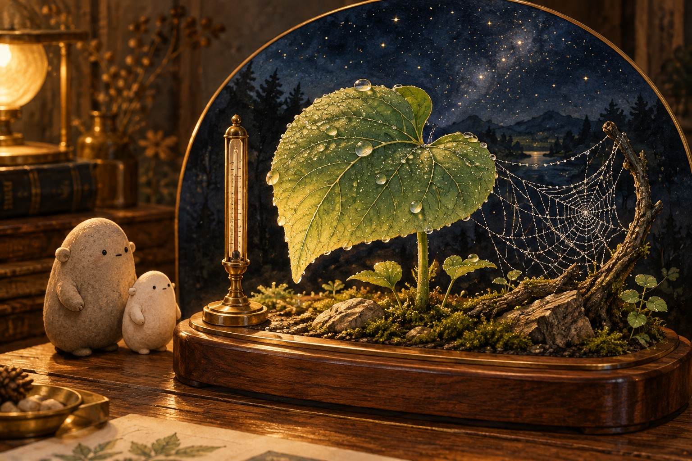

Show how a leaf gets wet without rain.
Welcome words, pointing, or a sketch. Connect cooling → condensation → dew. After sunrise, connect warming → evaporation → invisible vapor.
You can stop here.
Follow the leaf’s instructions
- Predict. Could the leaf get wet even if no rain falls?
- Arrange in words. Imagine a clear, calm night, a leaf, and air holding invisible water vapor.
- Let the night pass. The leaf gives off heat to the sky. It can become colder than the air. Air touching it cools too.
- Notice. When that air cools to its dew point, vapor condenses into liquid dew on the leaf. Sunrise warms the leaf; dew evaporates back into vapor.
Say a command for each step: Cool the leaf. Wait for air to touch it. Look for tiny drops. Warm the leaf.
No experiment is needed. Open the foldable story.
The garden model & picture notes

An imagined museum model made with built-in image generation. The interactive leaf and its mechanism are drawn in code. They work even when pictures cannot load.